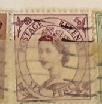
| SOURCE | TITLE| IMAGE MATCH | click to source page |
| eBay | Great Britain Queen Elizabeth II 1952 Five Pence, Postage Stamp ****RARE**** | eBay | 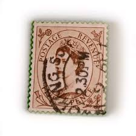 |
| eBay | Six Pence Stamp Elizabeth | eBay | 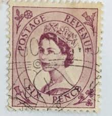 |
| eBay | 6p Denomination British Elizabeth II Stamps for sale | eBay | 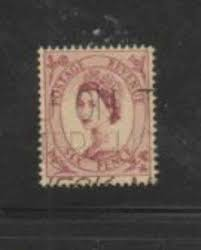 |
| ebid.net | GB Stamp SG 548 used: 1955 6d Queen Elizabeth II (Wilding) [1] on eBid United States | 143257659 | 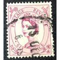 |
| eBay | Great Britain Queen Elizabeth II Six Pence POSTAGE REVENUE Used Stamp | eBay | 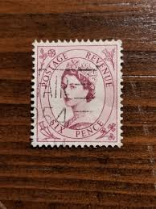 |
| eBay UK | GREAT BRITAIN SG-522, SCOTT # 299, USED, 2 STAMPS, GREAT PRICE! | eBay UK | 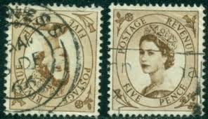 |
| eBay | Historic, 10d Anniv. of "Discovery of ROTUMA Queen Elizabeth II" FIJI 1966 | eBay | 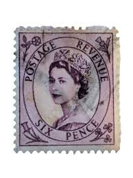 |
| HipStamp | Great Britain #325 6p Queen Elizabeth II | Great Britain, General Issue Stamp / HipStamp | 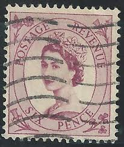 |
| Etsy | Vintage Queen Elizabeth II Stamp – Pink Six Pence, Great Britain - Etsy | 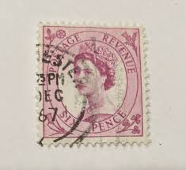 |
| BidCurios | 1954 Great Britain, Scott #300,Wilding: Queen Elizabeth 6P Used Stamp - Set of 2 - BidCurios | 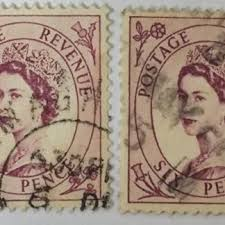 |
| eBay | Stamp Europe Great Britain "Queen Elizabeth II" 1953 set of 3 | eBay | 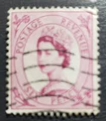 |
| Shutterstock | Karnal Haryana India -august 6th 2025-closeup Stock Photo 2671871647 | Shutterstock | 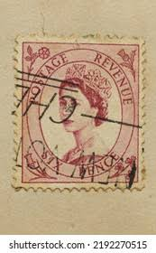 |
| eBay | Revenue Six Pence Stamp | eBay | 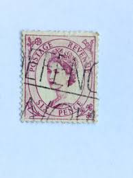 |
| Shutterstock | 17+ Thousand Queen Stamp Royalty-Free Images, Stock Photos & Pictures | Shutterstock | 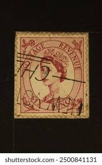 |
| eBay | Postage Revenue Foreign Six Pence Stamp Used - #A385 | eBay | 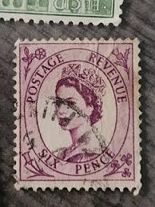 |
| mujeresporafrica.es | Starbucks hallowen collection | 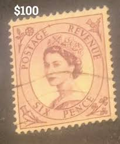 |
| eBay UK | Vintage Six Pence Postage Revenue Stamp Queen Elizabeth II Great Britain (X2) | eBay UK | 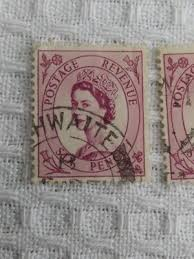 |
| eBay | Vtg WELLINGTON ARCH AND PICCADILLY RPPC Elizabeth II Stamp SLOGAN UK T0 INDIA | eBay | 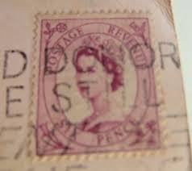 |
| eBay | Perfins Great Britain GB 1952, Pair QE II Five Pence C&A. Sc299 | eBay | 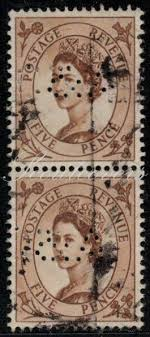 |
| eBay | GREAT BRITAIN #300 1952 6p QEII F-VF USED a | eBay | 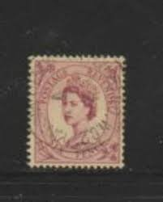 |
| eBay | GREAT BRITAIN #300 1952 6p QEII F-VF USED b | eBay | 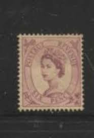 |
| eBay | Postage Revenue Foreign Six Pence Stamp Used - #A366 | eBay | 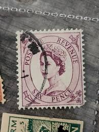 |
| eBay | Vintage Six Pence Postage Revenue Stamp Queen Elizabeth II Great Britain (X2) | eBay | 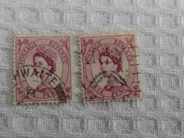 |
| eBay | Great Britain Queen Elizabeth II Six Pence POSTAGE REVENUE Used Stamp | eBay | 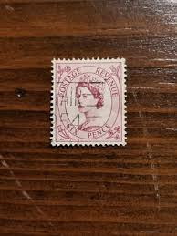 |
| Empirephilatelists.com | Grenada 1881 2 1/2d Rose-Lake SG24b 'PENCF' Error Fine Used Stamps|Empirephilatelists.com | 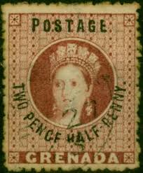 |
| eBay | Perfins Great Britain GB 1952, Pair QE II Five Pence CP. Sc299 | eBay | 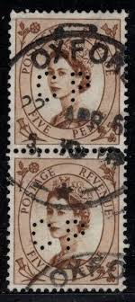 |
| The Itty Bitty Stamp Company | Cape of Good Hope Scott # 63-65 Used – The Itty Bitty Stamp Company | 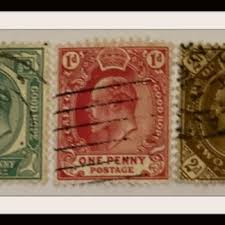 |
| eBay | GREAT BRITAIN SG-522, SCOTT # 299, USED, 2 STAMPS, GREAT PRICE! | eBay | 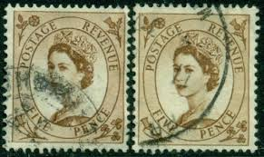 |
| Stamp Forgeries of the World | Stamp forgeries of Queensland | Stampforgeries of the World | 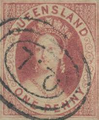 |
| eBay | Postage Revenue Foreign Stamp Used - #A352 | eBay | 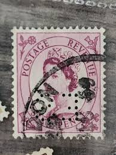 |
| eBay | Queensland Sc 1 used 1860 1p Queen Victoria Chalon Head, tiny pinhole in cancel | eBay | 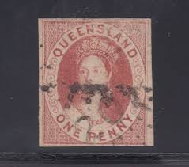 |
| Mark C. Grove | 1375:: Stamps, Victoria, AUSTRALIA, 1901-1902, red one penny, Queen Victoria, inscription 'POSTAGE', cancelled Sc194. - Mark C. Grove | 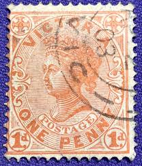 |
| eBay | GREAT BRITAIN SG-548, SCOTT # 325, USED, 5 STAMPS, GREAT PRICE! | eBay | 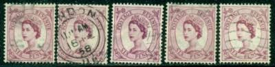 |
| eBay | BRITISH QUEENSLAND, YV # 29, USED | eBay | 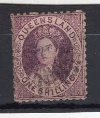 |
| Mystic Stamp | 7-8 - 1860-63 New Brunswick - Mystic Stamp Company | 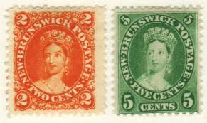 |
| eBay | 1880-96 Newfoundland Sc# 41 - 1¢ Edward VII as Prince of Wales, MH Cv$60 | eBay | 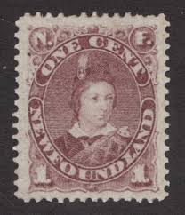 |
| eBay | KENYA UGANDA TANGANYIKA 1953 Coronation blocks of FDC - skeleton cds.......B6733 | eBay | 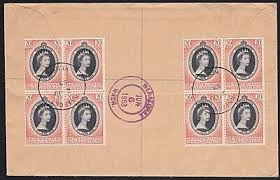 |
| eBay | Pre-Decimal Used Postage Queensland Stamps for sale | eBay | 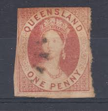 |
| Empirephilatelists.com | Natal 1870 1d Bright Red SG60 Fine Used (2) Queen Victoria (1840-1901) Stamps | 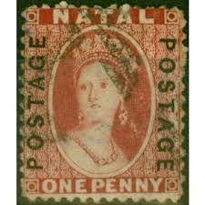 |
| Empirephilatelists.com | Natal 1874 1d Rose SG65 Fine Used| Empirephilatelists.com | 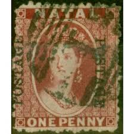 |
| eBay | Natal #14 Pen Cancel - Used - Stamp CAT VALUE $82.50 | eBay | 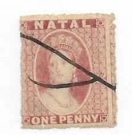 |
| Shutterstock | Revenue Stamps: Over 2,052 Royalty-Free Licensable Stock Photos | Shutterstock | 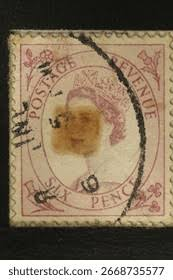 |
| eBay | GREAT BRITAIN 364 (SG581) - Queen Elizabeth II "1960 Bright Rose" (pf17276) | eBay | 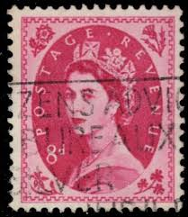 |
| eBay | QUEENSLAND Sc#76 1885 Queen Victoria Used Hindge rem.Fine (15-310) | eBay | 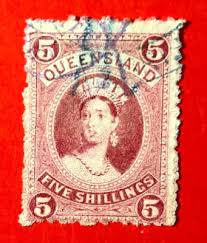 |
| eBay | NATAL 1863 QV CHALON 1D WMK CROWN CC PERF 12½ NO GUM | eBay | 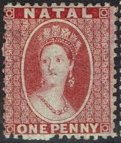 |
| eBay | QUEENSLAND 1862 QV CHALON 1D NO WMK ROUGH PERF 13 | eBay | 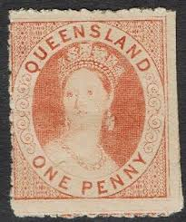 |
| thedoghouse.se | Stamp Collecting St Kitts & Nevis Stamps (1983-Now) - HiCollectors Forever Stamps Clearance Sale | 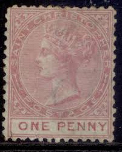 |
| eBay | STAMPS-QUEENSLAND. 1862 1d Orange Vermilion, Rought Perf 13. SG: 22. Mint Hinged | eBay | 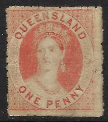 |
| eBay | GREAT BRITAIN Queen Victoria USED (Pair) 1887 6d Purple on Red Stamp | eBay | 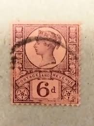 |
| eBay | NEW BRUNSWICK 9 MINT NEVER HINGED OG ** NO FAULTS VERY FINE! - MFZ | eBay | |
| eBay | QUEENSLAND 1907 QV LARGE CHALON 5/- WMK CROWN/A | eBay | |
| eBay | Postage Revenue Foreign Stamp Used - #A352 | eBay | |
| eBay | NOVA SCOTIA Sc. #12 scarce used stamp (2)! SCV $12.00 | eBay | |
| eBay | 1864 Series TAS TASMANIA Van Diemens Land Australia 1d QV Chalon Head REF: VDL64 | eBay | |
| eBay | TASMANIA 1863 QV CHALON 6D PERF 12 REDDISH MAUVE | eBay | |
| eBay | Great Britain Koch & Co Order Postcard Victoria 1p London1895 Revigny France 3w | eBay | |
| eBay | CANADA NEWFOUNDLAND 1894 SC 42 PRINCE EDWARD VII 1¢ GRAY BROWN MHR OG F/VFINE | eBay | |
| JustCollecting | GREAT BRITAIN 1862 postage stamp — JustCollecting | |
| The Itty Bitty Stamp Company | New Brunswick Scott # 9 Mint Light Hinged – The Itty Bitty Stamp Company | |
| eBay | tas056 1865 australia tasmania one penny gibbons sg #69 170 pounds 1st lh |